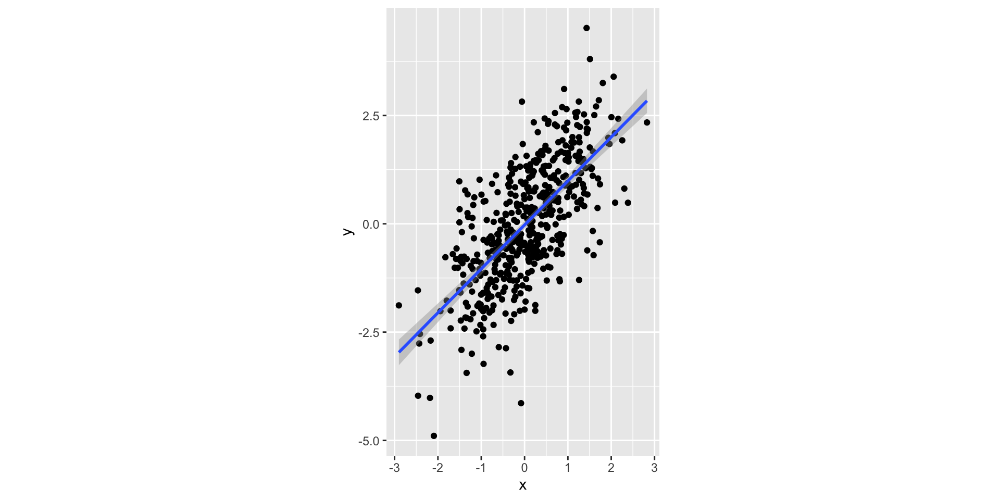

[1] 5Course Introduction
2025-08-29
Rick Gilmore
Department of Psychology
Prelude
Today’s topics
- Course introduction
- A cognitive sensibility
- On cognitive development
- Your turn
Course introduction
Introductions all around
PSY 548
- Structure
- Group discussion (Gilmore leads)
- Student presentation and student-led discussion
- Material
- Theoretical & empirical
- Classic & modern
- Schedule
- Evaluation
A cognitive sensibility
- On cognition
- On computation
- On representation
- On modeling
- On explicating behavior
On cognition
Bayne et al. (2019)
Common themes
- Processes, concepts, representations (Bayne)
- Perception vs. cognition (Brainerd)
- “acquisition, storage, retrieval and processing of information” (Byrne)
- cognition vs. learning theory (Byrne)
- representations and how coded in the brain (Byrne)
Common themes
- mental processes; biological problem-solving; knowing about knowing; more complex than associative learning (Chittka)
- thinking, knowing, understanding; non-human animal cognition (Clayton)
- conservative, e.g., related to human thought vs. liberal, adaptive information handling and can be modelled as computation; attention; categorization (Heyes)
Common themes
- how sensory input “is transformed, reduced, elaborated, stored, recovered and used”; animal umwelt (Mather)
- less vs. more introspection/deliberation; ““requires learning”; “isn’t a reflex”; “depends on internally generated brain dynamics”; “needs access to stored models and relationships”; “relies on spatial maps” (Ölveczky)
- “flexibility, contingency and freedom from immediacy” (Shadlen)
Common themes
- not uniquely human; intentional vs. unintentional, conscious vs. unconscious, effortful vs. automatic, slow vs. fast processes (Suddendorf)
- “I know that I am cognizing, but I can only surmise that cognition has occurred in other animals by observing their actions.”; “behaviours in which an animal performs an action directed towards a goal it cannot currently perceive” (Webb)
Student insights
On computation
Is the brain a digital computer?
How do digital computers compute?
- Strings of binary digits (bits) represent information
0001: the number one;1111: the number 15 (in base 2)00110001: the character symbol ‘1’ in ASCII (Wikipedia contributors, 2025f)- (some other binary ‘word’): symbol meaning ‘add’, or ‘store’, etc.
How do digital computers compute?
- Sequences of binary commands can be data or a program
- Computer has Central Processing Unit (CPU), addressable memory (addresses are also binary words), interfaces (move info in and out), etc.
High-level computer languages
- Represent
- data as variables, e.g.
h,x, andy - functions or operators as character or strings, e.g.,
<-,sqrt(),^ - Convert to binary, then back again to give human-readable output
- data as variables, e.g.
High-level computer languages
“What might cognition be, If not computation?”
Analog
Algorithmic
Van Gelder (1995)
On representation
Surface forms

Deep forms
- Map (relate) multiple surface forms to
- A single deep form \(\rightarrow\) the letters “A” and “G”
- “Re-presentation”
- Why? Some forms more easily “computable”, more efficiently stored, less “lossy”

https://twiistedmedia.com/bitmap-vs-vector-printing
A cognitive sensibility
- Asks what info is available
- In the world
- In the mind
- In what form(s)
- Representations all the way down1

On modeling
All models are wrong…
“…but some are useful.”
Wikipedia contributors (2025d)

Simmering, Triesch, Deák, & Spencer (2010)
- Mathematical vs. verbal models
- Are verbal models poorly specified?
- Do mathematical models “just move the ambiguity to the next level”?
Simmering et al. (2010)
Phil: That’s an interesting point—in a way, all researchers use mathematical models when they apply statistical methods.
Mira: Hm, I suppose that’s true. I wouldn’t normally include statistics in my definition of computational models. I’m thinking about models that emphasize the processes underlying behavior and development.
What do statistics model?
- What does a correlation (r) mean?
Pearson's product-moment correlation
data: x and y
t = 24.839, df = 498, p-value < 2.2e-16
alternative hypothesis: true correlation is not equal to 0
95 percent confidence interval:
0.7019821 0.7806492
sample estimates:
cor
0.7438814 What do statistics model?
Figure 1
Plot your data!

“The Datasaurus dozen - same stats, different graphs | Autodesk Research” (n.d.); Matejka & Fitzmaurice (2017)
Aside…
- Simulating your data can help reveal hidden assumptions about what your statistical model actually means, what kind of plots will best show predicted effects, etc.
- Plotting your data can reveal patterns that the statistics alone obscure.
- So, do statistical models inform us about processes?
Simmering et al. (2010)
Phil: …Lewis Thomas once wrote an essay listing the seven wonders of the modern world—it was a challenge put to him in the form of a dinner invitation which he, interestingly, declined. Do you know what his Seventh Wonder of the modern world was?
Phil: Thomas’s Seventh Wonder was the development of a human child. How, my brilliant companions, are you going to explain that?
Cognitive models
- Wikipedia contributors (2025b)
- Many types
Box and Arrow
flowchart LR A[Stimulus] --> B[Sensation] B --> C[Perception] C --> D[Cognition] D --> E[Action]
flowchart LR A[Stimulus] --> B[Sensation] B --> C[Perception] C --> D[Cognition] D --> E[Action] B --> F[Memory] F --> C D --> G[Attention] G --> C G --> F
- See also Figures 3.1 and 3.4 in Siegler & Alibali (2021)
A computer program…
- That simulates some complex behavior
- Is one type of model
- Production systems (pp. 59-64 in Siegler & Alibali (2021))
Unified Theories of Cognition (Wikipedia contributors, 2025a)

Newell (1990)
Why a unified theory?
Fig 1-6 from Newell (1990)
Constraints on minds
- Behave flexibly as a function of the environment
- Exhibit adaptive (rational, goal-oriented) behavior
- Operate in real time
- Operate in a rich, complex, detailed environment
- Use symbols and abstractions
- Use language, both natural and artificial
- Learn from the environment and from experience
- Acquire capabilities through development
Constraints on minds
- Operate autonomously
but within a social community - Be self-aware and have a sense of self
- Be realizable as a neural system
- Be constructable by an embryological growth process
- Arise through evolution
On explicating behavior
The cognitive revolution 1

- Can’t (rigorously) look inside the mind.

- Must (rigorously) look inside the mind.
Ritter, Baxter, & Churchill (2014)
- Task Analysis (TA) as a tool for designing “user-centered systems”
- What do (people, e.g. children) have to do?
- Often the basis of creating a computational cognitive model
Ritter et al. (2014)
Figure 11.1 from Ritter et al. (2014)
On cognitive development
Big questions
- Are some capabilities innate?
- Does children’s thinking progress through qualitatively different stages?
- How do changes in children’s thinking occur?
- Why do individual children differ so much from each other in their thinking?
Chapter 1 in Siegler & Alibali (2021)
Big questions
- How does development of the brain contribute to cognitive development?
- How does the social world contribute to cognitive development?
Chapter 1 in Siegler & Alibali (2021)
Big questions (condensed)
- Starting (or current at age X) state
- Patterns of change
- Causes of change
Your turn
Let’s do a hierarchical task analysis!
- Pick a task you know well, use in your research
- What is required to perform it?
- (Later) what cognitive components are associated with the task?
Is the analysis useful?
Take homes
- A “cognitive” sensibility is about…
- Information, representations, operations/processes
- Sequences, hierarchical structures
- Solving real-world problems
- Inspired by computational systems
Next time…
Resources
About
This talk was produced using Quarto, using the RStudio Integrated Development Environment (IDE), version 2025.5.1.513.
The source files are in R and R Markdown, then rendered to HTML using the revealJS framework. The HTML slides are hosted in a GitHub repo and served by GitHub pages: https://psu-psychology.github.io/psy-548-fall/
References
Bayne, T., Brainard, D., Byrne, R. W., Chittka, L., Clayton, N., Heyes, C., … Webb, B. (2019). What is cognition? Current Biology: CB, 29, R608–R615. https://doi.org/10.1016/j.cub.2019.05.044
Matejka, J., & Fitzmaurice, G. (2017). Same stats, different graphs: Generating datasets with varied appearance and identical statistics through simulated annealing. In Proceedings of the 2017 CHI conference on human factors in computing systems. New York, NY, USA: ACM. https://doi.org/10.1145/3025453.3025912
McCulloch, W. S., & Pitts, W. (1943). A logical calculus of the ideas immanent in nervous activity. The Bulletin of Mathematical Biophysics, 5, 115–133. https://doi.org/10.1007/BF02478259
Newcombe, N. S. (2013). Cognitive development: Changing views of cognitive change. Wiley Interdisciplinary Reviews. Cognitive Science, 4, 479–491. https://doi.org/10.1002/wcs.1245
Newell, A. (1990). Unified theories of cognition. Cambridge, MA: Harvard University Press.
Piaget, J. (1953). The Origins of Intelligence in Children. New York: Routledge. https://doi.org/10.1037/11494-000
Ritter, F. E., Baxter, G. D., & Churchill, E. F. (2014). Foundations for designing user-centered systems: What system designers need to know about people (2014th ed.). London, England: Springer. https://doi.org/10.1007/978-1-4471-5134-0
Siegler, R., & Alibali, M. (2021). Children’s Thinking (5th ed.). Pearson.
Simmering, V. R., Triesch, J., Deák, G. O., & Spencer, J. P. (2010). To model or not to model? A dialogue on the role of computational modeling in developmental science: To model or not to model? Child Development Perspectives, 4, 152–158. https://doi.org/10.1111/j.1750-8606.2010.00134.x
The Datasaurus dozen - same stats, different graphs | Autodesk Research. (n.d.). Retrieved June 2, 2019, from https://www.autodeskresearch.com/publications/samestats
Van Gelder, T. (1995). What might cognition be, if not computation? The Journal of Philosophy, 92, 345–381. https://doi.org/10.2307/2941061
Wikipedia contributors. (2025a, February 24). Unified theories of cognition. Retrieved from https://en.wikipedia.org/wiki/Unified_Theories_of_Cognition
Wikipedia contributors. (2025b, May 24). Cognitive model. Retrieved from https://en.wikipedia.org/wiki/Cognitive_model
Wikipedia contributors. (2025c, June 28). Turtles all the way down. Retrieved from https://en.wikipedia.org/wiki/Turtles_all_the_way_down
Wikipedia contributors. (2025d, July 23). All models are wrong. Retrieved from https://en.wikipedia.org/wiki/All_models_are_wrong
Wikipedia contributors. (2025e, August 13). Cognitive revolution. Retrieved from https://en.wikipedia.org/wiki/Cognitive_revolution
Wikipedia contributors. (2025f, August 25). ASCII. Retrieved from https://en.wikipedia.org/wiki/ASCII